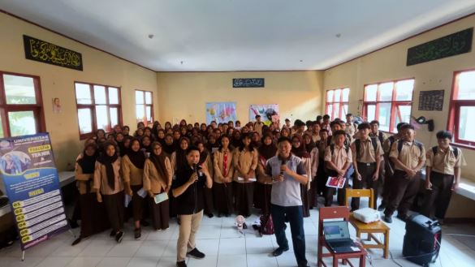
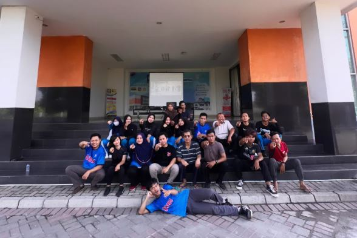
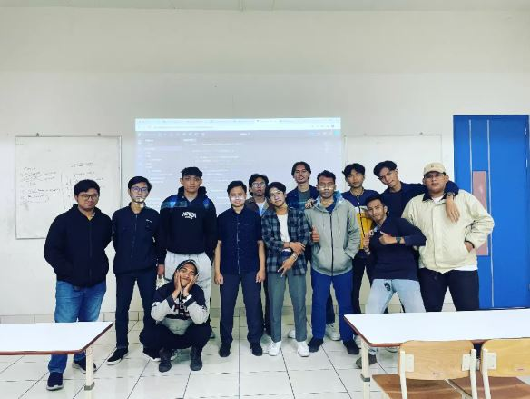
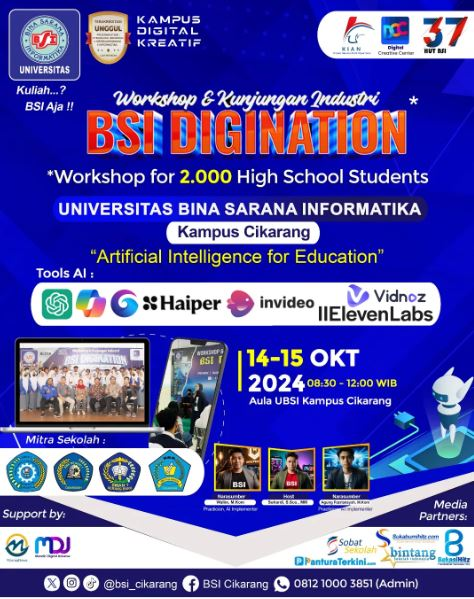
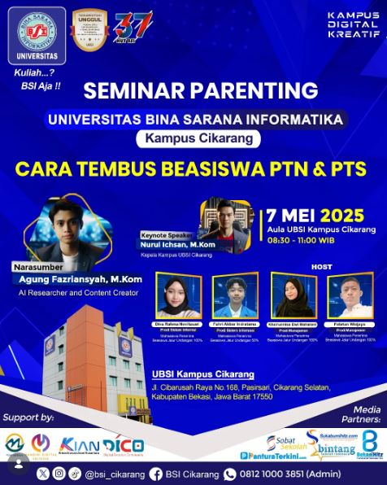
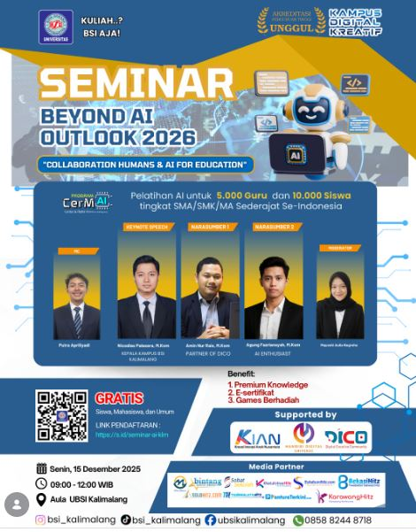
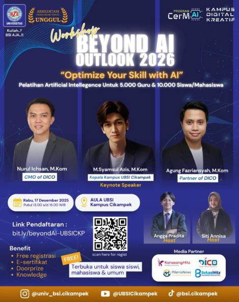
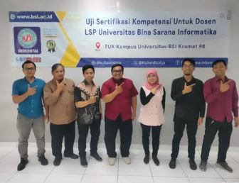
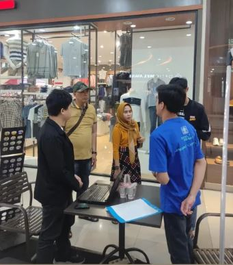

🌿 Halo, Perkenalkan nama saya
Agung Fazriansyah
Kolaborasi dunia akademik, teknologi AI, machine learning, digital & marketing untuk menciptakan karya dan solusi yang berdampak.

Kolaborasi dunia akademik, teknologi AI, machine learning, digital & marketing untuk menciptakan karya dan solusi yang berdampak.
Saat ini aktif sebagai Dosen Program Studi Sistem Informasi Universitas Bina Sarana Informatika, sekaligus menjalankan peran strategis dalam aktivitas Public Relations dan Marketing Communication Area untuk membangun citra institusi, meningkatkan engagement masyarakat, serta mendukung pencapaian target penerimaan mahasiswa baru. Fokus keahlian meliputi Digital & Marketing Strategy, Branding, Event Management, Public Relations, Data Mining, dan Pengembangan Sistem Informasi berbasis teknologi digital.
Dokumentasi aktivitas akademis, seminar, pengajaran, relasi, dan event branding.

Workshop & Sosialisasi

Pengabdian Masyarakat

Akademik Mahasiswa

Poster Event AI

Poster Seminar Beasiswa

Outlook 2026 Kalimalang

Workshop Beyond AI

Sertifikasi Kompetensi Dosen

Aktivitas Public Relations
Berbagi insight seputar AI, Data Science, Public Relations, dan Tren Digital Komunikasi.